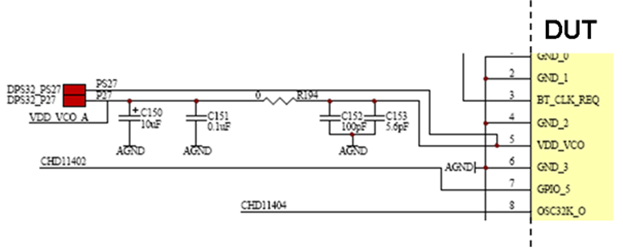
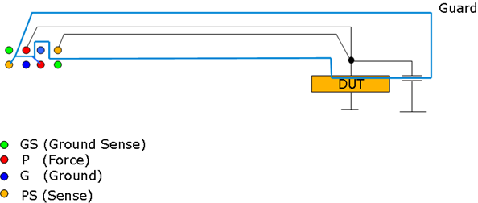

Routing sense lines and guard
Routing sense lines
For the routing of sense lines follow these rules:
- Route sense lines as traces.
- Connect sense lines to force +/- as close to the DUT as possible.
- Connect sense lines at DUT supply pins, or
- Connect them at the closest bypass capacitor
- Treat sense lines as critical signal paths.
- Separate them from other traces to avoid feeding noise back to the DPS voltage source.

Guard routing
For high precision measurements of small currents, route the guard trace around force and sense lines to minimize current leakage.
The guard DPS channel is not connected to the device and it is charged to the same voltage as the pins powering the device.
Note On some DC Scale power supply cards there is no dedicated guard pin. In
this case you can use an adjacent force pin and route the guard traces around the
sensitive force and sense traces. In the example shown below the force pin is
indicated as P (power) and sense is PS (power sense).
.

Functional changes
- Introduced in SmarTest 7.2.0